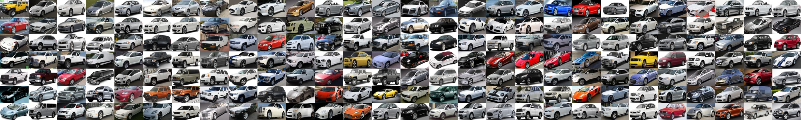

Cars Dataset | ||||||||
|  | ||||||||
Overview | ||||||||
| The Cars dataset contains 16,185 images of 196 classes of cars. The data is split into 8,144 training images and 8,041 testing images, where each class has been split roughly in a 50-50 split. Classes are typically at the level of Make, Model, Year, e.g. 2012 Tesla Model S or 2012 BMW M3 coupe. | ||||||||
|
|
||||||||
Download | ||||||||
|
Training images can be downloaded here.
Testing images can be downloaded here. A devkit, including class labels for training images and bounding boxes for all images, can be downloaded here. If you're interested in the BMW-10 dataset, you can get that here. Update: For ease of development, a tar of all images is available here and all bounding boxes and labels for both training and test are available here. If you were using the evaluation server before (which is still running), you can use test annotations here to evaluate yourself without using the server. |
||||||||
Evaluation | ||||||||
| An evaluation server has been set up here. Instructions for the submission format are included in the devkit. This dataset was featured as part of FGComp 2013, and competition results are directly comparable to results obtained from evaluating on images here. | ||||||||
Citation | ||||||||
|
If you use this dataset, please cite the following paper:
3D Object Representations for Fine-Grained Categorization Jonathan Krause, Michael Stark, Jia Deng, Li Fei-Fei 4th IEEE Workshop on 3D Representation and Recognition, at ICCV 2013 (3dRR-13). Sydney, Australia. Dec. 8, 2013. [pdf] [BibTex] [slides] Note that the dataset, as released, has 196 categories, one less than in the paper, as it has been cleaned up slightly since publication. Numbers should be more or less comparable, though. |
||||||||
Contact | ||||||||
| ude.drofnats.sc@esuarkj | ||||||||
 | ||||||||